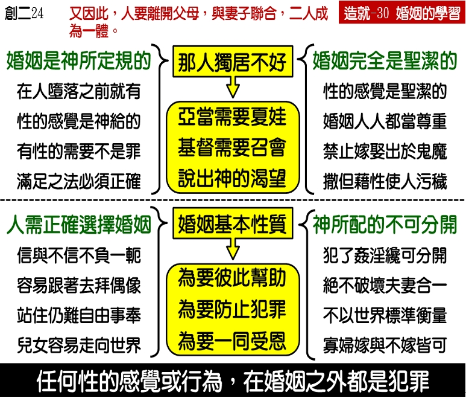

诗歌：补327 首、328 首
重要经文：
希伯来书十三章四节上：婚姻当在众人中间受尊重。
提摩太前书四章三节：他们禁止嫁娶，禁戒食物，就是神所造，给那些信的人，并认识真理的人，感谢着享受的。
哥林多后书六章十四节：你们跟不信的，不要不配的同负一轭，因为义和不法有什么合伙？光对黑暗有什么交通？
纲目要点：
壹 婚姻是圣洁的：
一 婚姻的规定，不是在犯罪之后的事，乃是在犯罪之前的事。
二 婚姻不仅是该尊重的，并且是圣洁的。
贰 婚姻的基本性质：
一 为要彼此帮助。
二 为要防止犯罪。
三 为要一同受恩。
参 结婚的对象－神的子民的婚姻，只限于神的子民之中：
一 旧约的命令——申七章3~4，书二十三 12~13。
二 新约的话——林前七39，林后六 14。
肆 神所配合的人不可分开。
伍 任何性的感觉或行为，在婚姻之外都是罪。
信息选读：
婚姻是圣洁的
人的婚姻乃是神所定规的，乃是神所开始的。婚姻的规定，不是在犯罪之后的事，乃是在犯罪之前的事。婚姻的规定，不是在创世记三章之后的事，乃是在创世记三章之前的事。在创世记二章里，神就规定了。所以，性的感觉的产生，乃是在罪还没有进入世界之前就有的，不是在罪进入世界之后才有的。因此，人有性的感觉，绝不是罪。在这一个感觉的里面，没有罪的成分。并且，这一个感觉乃是神自己所创造的。我遇到许多的人，在婚姻问题上受到搅扰。他们因为不知道神的定规，不清楚神的话，就无谓的受到良心的控告。他们有这一个感觉，就以为是有罪。他们有这一个要求，就以为是有罪。有的弟兄弄到严重的地步，甚至疑惑神的工作，只因为他有性的感觉。要知道，以性为罪的思想，是异教的思想。我们对于神的话要认得准。人觉得肚子饿不是罪，照样，人有性的需要也不是罪，这是天然的感觉。希伯来十三章告诉我们说，『婚姻当在众人中间受尊重。』婚姻不仅是该尊重的，并且是圣洁的。所以我们要看见，神不只认为性是天然的，神也认为性是圣洁的。
为要彼此帮助
神替亚当造一个配偶，也是在第六天造的。神把夏娃造出来，就带到亚当面前。所以夏娃的产生，乃是为着婚姻。『配偶』这个辞的意思：要把她配上去，才能叫他得着帮助。这个字在希伯来文的意思就是能配他，给他帮助。有许多读圣经的人，常常注意这一句话。当神造人的时候，神在那里需要有男人加上女人。但是圣经说，神造人。所以神造人，乃是造男人也造女人，那才成功作一个人。两个半个合起来，才是完全的。所以，等夏娃造好之后，才说祂的工作是好的。这给我们看见说，婚姻不是人起头的，乃是神起头的。婚姻的起点，不是在人犯罪之后，乃是远在人犯罪之前。人不是第一天受造就犯罪，人是第一天受造就结婚。神把夏娃造好之后，第一天就带给亚当。这不是犯罪之后的事。婚姻的事，乃是神发起的。在这里，你们就看见婚姻在神面前的地位。神的目的乃是要有一个丈夫，有一个妻子，是能够彼此帮助的，所以称他的妻子作配偶。『配偶，』希伯来文的意思是说，要配他，来帮助他。可以说是『配助。』你们在这里看见说，神要人有一个共同的生活，要彼此有交通，彼此有帮助。这是神的目的。
为要防止犯罪
在旧约，罪还没有进来的时候，神已经设立了婚姻。到了新约的时候，保罗在林前七章，就给我们看见说，因为有罪进来的缘故，不只不禁止婚姻，反而变作更需要婚姻。婚姻能防止罪。所以保罗就告诉我们说，为了要免去奸淫的罪的缘故，男人应该有自己的妻子，女人应该有自己的丈夫。在林前七章里面，保罗并没有定性的感觉为有罪，他反而给我们看见，男女都应该结婚，才能防止罪。
旧约的命令
申命记七章三至四节告诉我们，不可与以色列人之外的迦南人结婚。不可将女儿嫁给他们的儿子，也不可叫儿子娶他们的女儿。因为他们必使我们转离不跟从主，去事奉别神。所以，神在旧约里已经够清楚的给我们看见，婚姻的对象乃是在主里的人。不能在信主的人之外找妻子，不能在信主的人之外找丈夫。不然的话，最大的难处，就是要叫我们离弃耶和华，去事奉别神。妻子跟着丈夫去拜偶像，是容易的事。丈夫跟着妻子拜偶像，也是容易的事。因为既然结婚，就很容易去拜他们的神。
约书亚二十三章十二至十三节，也警戒以色人，不要与当地的人结婚。他们要成为一个网罗，要成为你的刺在你身上，结果你们要落到网罗里去。在尼希米的时候，以色列人从被掳之地回到犹太地后，有许多人因为娶外邦女子为妻，结果落到一个地步，他们不能讲犹太的话。所以，在尼希米十三章二十三至二十七节，要他们与外邦女子完全断绝，不要与外邦女子有来往。所以，基督徒的婚姻乃是有对象的，基督徒婚姻的对象只应该是在信徒中间。
新约的话
在新约里，保罗对我们说的话够清楚。林前七章三十九节，他对寡妇说，要嫁给在主里的人。林后六章十四节，这是一段顶有名的圣经，给我们看见，信的和不信的不能同负一轭。这句话不只是指着婚姻说的，但是也包括婚姻在内。信的和不信的不要作同样的事，不要为着同一个目的，就像把一个轭摆在两个人的背上来犁田，这是神不许可的。神不许可一个信的和一个不信的在那里负一个轭。在旧约里面，一只牛不能和一匹马摆在一个轭底下犁田。一匹驴也不能和一匹马摆在一个轭底下犁田。不能一个快，一个慢。不能一个往这一边走，一个往那一边走。不能一个往天上去，一个往世界去。不能一个要得着属灵的祝福，一个要得着世界的丰富。一个拉这一边，一个拉那一边，这一个轭非折断不可。在信的和不信的不能同负一轭的事情上，没有一件事比婚姻更厉害。从合股作生意起，或者加入什么事起，一直到婚姻为止，最厉害的轭是婚姻。信的人和不信的人一同在那里负起家庭的责任，结果定规是相当的难。
罪的问题
在旧约里，只不许人奸淫，因为人对于自己的认识不够。什么叫作奸淫呢？有配偶的人犯罪就是奸淫。什么是淫乱呢？没有配偶的人犯罪就是淫乱。行为是一样的，罪却不一样。破坏有配偶的合一是罪；没有配偶的，没有破坏合一的淫乱也是罪。我们要看见，性是圣洁的，性的感觉没有罪。性的行为是圣洁的，在婚姻里面没有罪。如果你已经有婚姻的关系，而在婚姻之外有性的行为，这是奸淫。如果你没有婚姻的关系，而有性的行为，这是淫乱。（摘自初信造就第三十篇）
夫妇箴言
夫妇成为一体，是基督和召会的象征；在凡事上让基督居首位，是夫妇间的荣耀；同心祷告、同读主话，是每日的需要；妇顺夫爱，是一切生活的原则；彼此敬重、互相体恤，是爱的表现；敬爱对方的亲人，是蒙福的本分；谢谢和对不起，是该常说的话语；因熟而失礼貌，是失和的开端；第一次失和，是撒但的门户；对别人说对方的短处，是给撒但作工的机会；计算对方的短处、想到自己的长处，是接受撒但的提议；不让自己作对方的十字架，不忘对方是自己的十字架，是得胜的秘诀。
荣美的神人家庭
神性调和人性，流露馨香美德；不要彼此误会，要彼此领会；不要彼此要求，要彼此代求；不要彼此坚持，要彼此扶持；不要彼此否定，要彼此肯定；不要彼此定罪，要彼此认罪；不要彼此忍受，要彼此享受以基督为全家的元首，以圣言为全家的享受，以平安为全家的仲裁，以福音为全家的喜乐，以牧养为全家的事奉，以得胜为全家的盼望。
课程复习：
一 请说明婚姻的三个基本性质是什么？
二 为何保罗在林前七章，不只不禁止婚姻，反而变作更需要婚姻?
三 请根据旧约的命令说明基督徒的对象只应该是在信徒中间？
四 请根据新约的话说明基督徒的对象只应该是在信徒中间？
五 为何在信和不信的不能同负一轭的事上，没有一事比婚姻更厉害？
